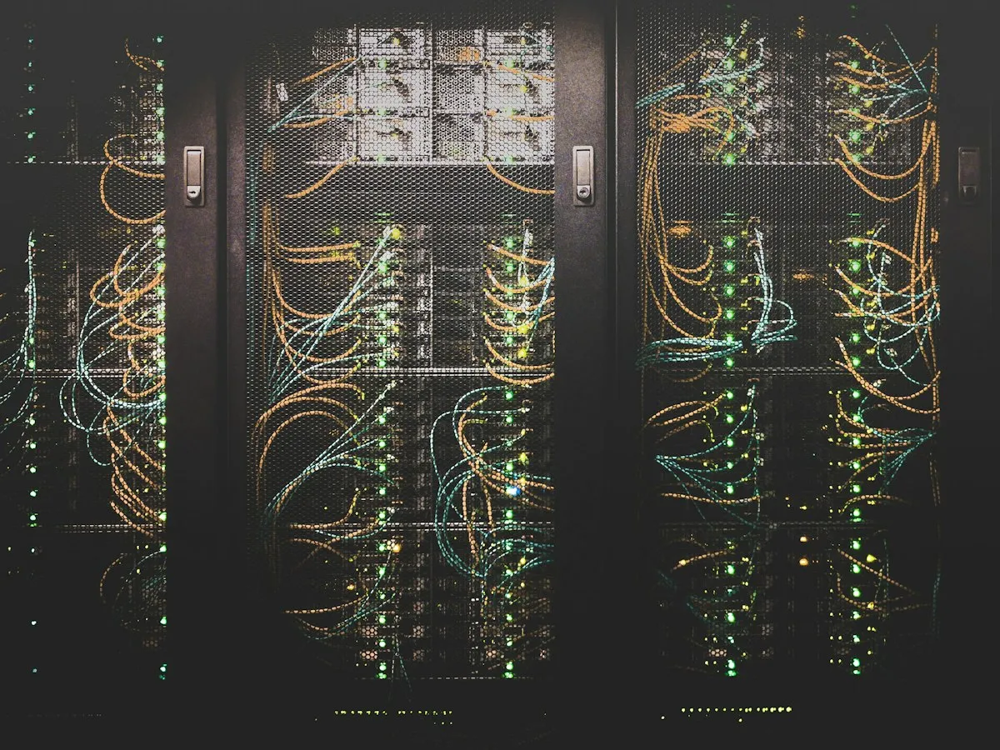

A Big Four company
Software companies that grew on referrals get the attention their good work deserves, from the buyers who don't know them yet.
Referrals got you here, but they come when they come, and in the quiet months the client who needed exactly you signs with whoever he'd already heard of.
See if you're a fitThis is for you if you believe that sharing what you solved, and what failed, helps the next person in your shoes, and that this is how a buyer comes to trust you.
Maybe you started posting, kept it up for a few weeks, and then a deadline took over.
Maybe a buyer you'd have been perfect for picked someone he'd seen online, and you only heard about it later.
Buyers come to know you and trust you before the first call, while your own time stays on your clients and you keep the final say on every word that carries your name.
- 1
We start by getting to know how you work and how you talk, and the first posts made from your own words go out only once they sound like you.
- 2
Then you start seeing your own stories everywhere your buyers spend their time, each one made from what you told us and approved by you before it goes out.
- 3
From the third week your presence is full on every platform, and the buyers who need you keep running into your work until they already know whose work they trust.

It's for you if you already have stories worth sharing from your projects, and you'd rather the right buyers hear them than keep waiting for the next referral.
It's not for you if you want fast results from ads, or if you'd rather keep your stories to yourself, because the trust we help you earn comes from what you share and grows the longer you show up.
We come from the same work you do, so we would rather build it properly than promise it fast, because the work that keeps running long after we leave is the reputation every referral comes from.

One of Europe's biggest retailers
They trusted us with their cloud infrastructure and the platform on top of it, and we built and drove both together with their own team.
A platform for teachers
We moved a vibe-coded platform that many teachers used for AI onto properly built software, so it could grow into the serious product it was meant to be.
We've been building software since 2015, and these three are only a few of the places that work has taken us.
We share what we learn about reaching buyers who don't know you yet, and all of it is free to use, whether we ever work together or not.
Answer eight quick questions, and you'll see which of the five stages you're at and the exact steps that move you to the next one.
At the end you can download your own roadmap, with the stage you're at marked and the steps for every stage written out in full.
Show me where I standBefore anything starts, we have a short call to see if this fits you, because it only works when it feels like yours.
We keep it to three owners at a time because that's how many we can do well, and when a place opens, the first one on the list hears from us before anyone else.
The presence we build together lives on your own accounts, so it's yours from the first day and it stays yours if you ever leave.
You stay because it works for you, and the day it doesn't, one call or message is enough for you to leave.